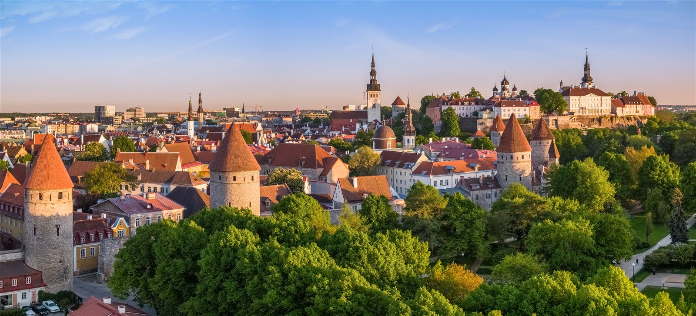
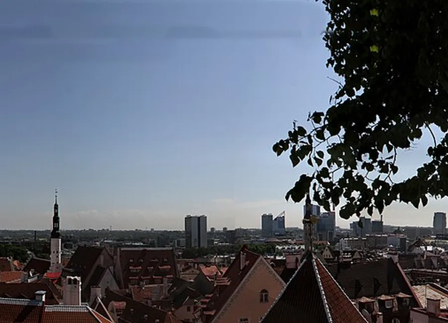
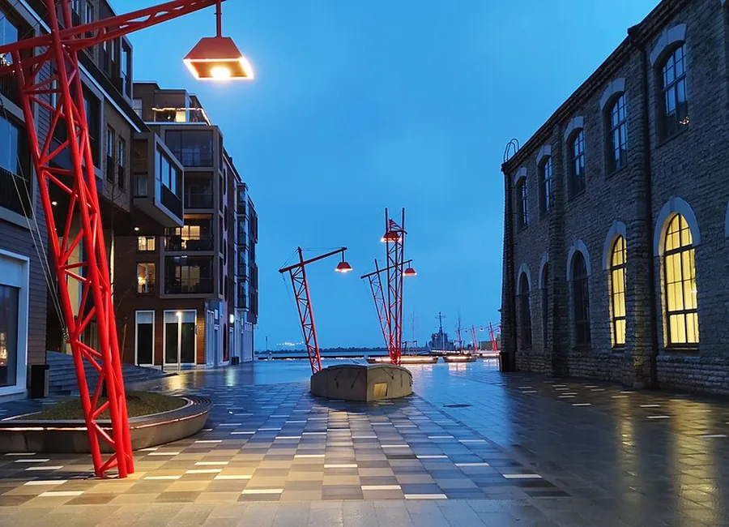
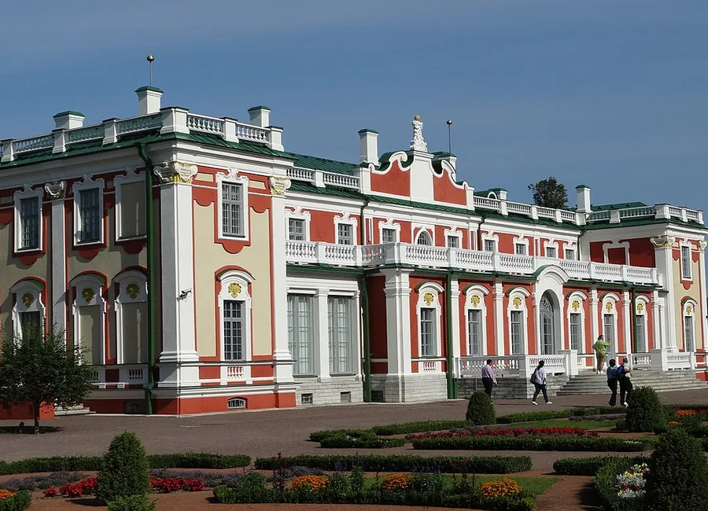
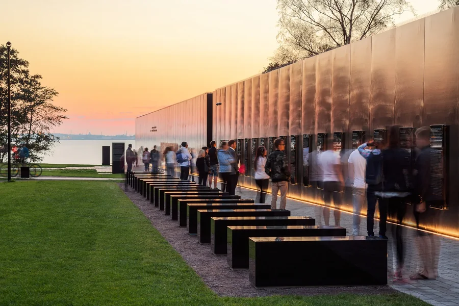

ארבע דרכים לראות את העיר
לכל הפרטים ←המסלולים
כל מסלול כולל סדר תחנות, זמן, מרחק, תנאי שטח וקישורי ניווט.

01
טאלין העתיקה
התצפיות, הסמטאות והלב של הביקור הראשון.
2.5–3.5 ש׳

02
טאלין על המים
נובלסנר, לנוסדאם והטיילת עד גג הטרמינל.
2.5–3.5 ש׳

03
קדיאורג
פארק, ארמון, אמנות וגן יפני בקצב נעים.
1.5–2.5 ש׳

04
טאלין של המאה ה־20
האנדרטה, מאריאמאה והפסלים הסובייטיים.
1–1.5 ש׳
לא רוצה לבחור מסלול שלם?
עמוד חובה לראות מרכז את המקומות המעניינים ביותר שאסור לפספס.